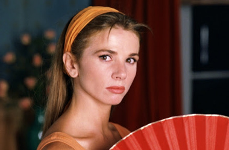
Victoria Abril - Marina Osorio
Antonio Banderas - Ricky
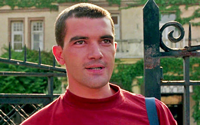
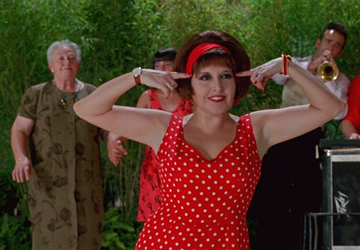
Loles León - Lola Osorio
Rossy de Palma - Drug dealer on scooter
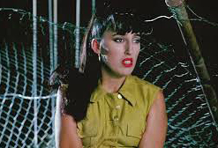
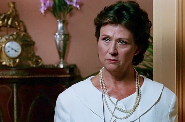
Julieta Serrano - Alma Espejo
Máximo Espejo - Film Director
Berta - doctor
Psychiatric Hospital Director
Marina and Lola's mother
Montse - journalist
Agustin Almodóvar - Pharmacist 2
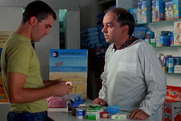
Ricky, a 23-year-old psychiatric patient, has been deemed cured and is released from a mental institution. Until then, he has been the lover of the woman director of the hospital. An orphan, free, and alone, his goal is to have a normal life with Marina Osorio, an actress, former porn star, and recovering drug addict, whom he once slept with during an escape from the asylum.
Ricky discovers Marina's whereabouts from a film journal announcement of the start of her next film. He goes to the studio, where Marina is in her last day at work filming The Midnight Phantom, a Euro-horror film about a hideously mutilated, masked muscleman in love with Marina's character. The film is directed by Máximo Espejo, an old film director confined to a wheelchair after a stroke. Máximo is a gentle mentor to Marina, and threatens to throw out a journalist who mentions the words 'porn' and 'junkie' in Marina's presence. His protection of the actress is not completely innocent, since he is sexually attracted to Marina and lusts after her, enjoying what could be his last experience of directing a sexy female lead.
When Ricky comes to the set, he steals a few necessary items including the keys to Marina's apartment, and before long, he is an unwelcome presence in her life. Ricky, with a long-haired wig, does a handstand to try to capture her attention. Marina does not remember him and quickly dismisses him.
After filming the last scene, Marina goes home to change for the post-shoot party. Ricky follows her to her apartment. When she answers the door, Ricky forces his way in, headbutts her to silence her when she screams; he tapes her mouth and binds her with rope. Marina wakes with a terrible toothache, which normal painkillers do not relieve, as she is addicted to stronger drugs. Ricky explains that he has captured her, so that when she gets to know him better, she will fall in love and they will get married and have children. 'I'll never love you, ever.' says Marina, understandably enraged at being handcuffed, gagged and lashed to the bed. 'We'll see.' says Ricky, who would do anything to win her heart.
Marina is shocked and in pain, and eventually persuades Ricky to take her to a doctor who can give her the necessary painkillers. Ricky barely leaves her alone with the doctor, and she is unable to communicate her plight. They cannot get the drugs in the pharmacy, so Ricky goes off to get them on the black market. However, rather than paying the street price, he attacks the dealer to get the tablets.
During the wrap party, Marina's sister Lola, who is the assistant director of The Midnight Phantom, steals the show with a musical number. Increasingly worried about her sister's disappearance, Lola visits Marina's apartment and leaves a note. To avoid being discovered, Ricky moves Marina to her next door neighbour's apartment, which is empty, but the owner has left his keys with Lola, so she can water his plants while he is away during the summer.
In the street again, Ricky is spotted by the dealer who he had attacked. Ricky is then seriously beaten, robbed and left unconscious. During his absence, Marina makes a desperate but somewhat half-hearted attempt to escape from her captivity. However, when Ricky returns covered with blood and cuts, she sees his vulnerability and devotion to her, no matter how misguided. She cares for him, cleaning and sterilising his wounds, and is suddenly struck by the realisation that she has fallen in love with her captor. They make love at length and Ricky seems to be on the verge of achieving his aim. They decide to take a trip together to his native village.
When he is about to leave to steal a car for the trip, Marina, who still considers herself his prisoner, tells him to keep her tied up so that she will not try to escape. However, in Ricky's absence, Lola reenters the apartment and discovers Marina tied up and rescues her. Marina informs her sister that she is in love with her captor. Lola is astonished to learn that Marina really no longer wants to be rescued, but once convinced, she agrees to drive Marina to Ricky's birthplace. They find him there in the ruins of his family house in a deserted village, then the three climb into Lola's car to return to the city. Lola promises Ricky she will find him a job within the week, Marina cries with happiness, and they drive off together into the distance, singing like a normal family.
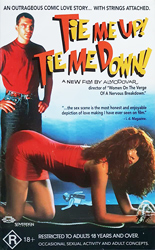
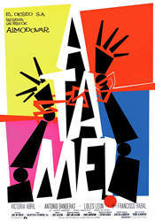
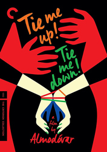
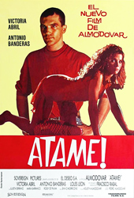
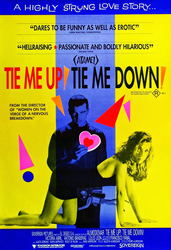
Don Siegel (1956) - Poster in the director's editing room.
Rafael Hernández - Performed by Loles León
Jacob Gade